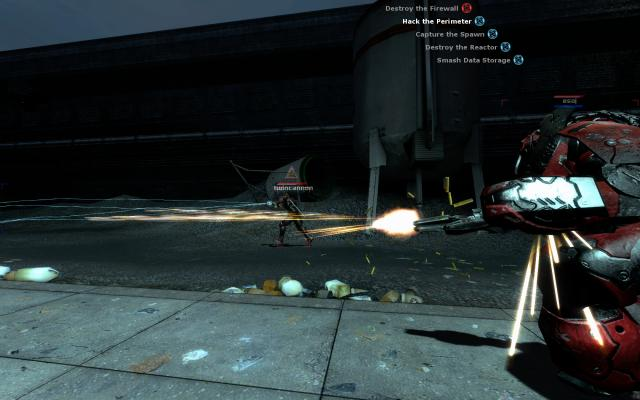
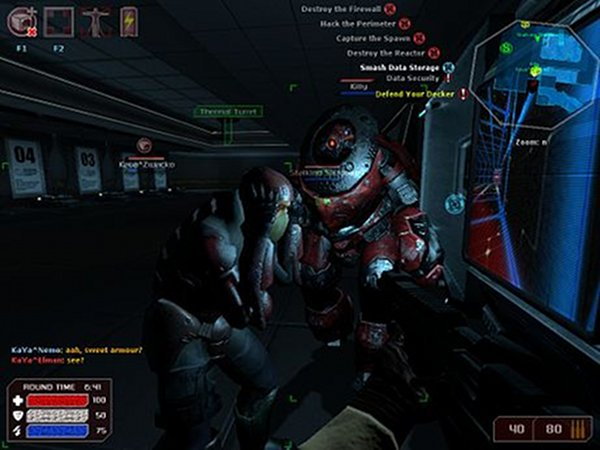
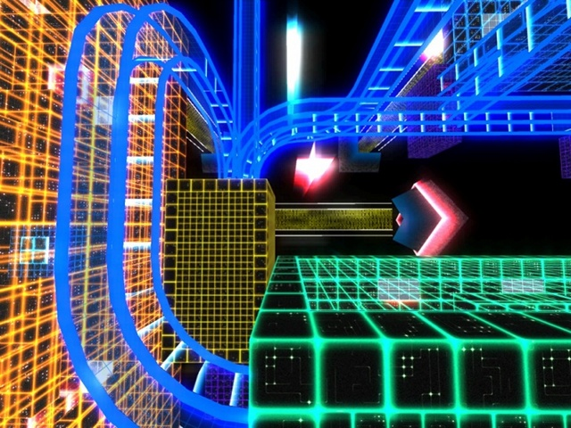
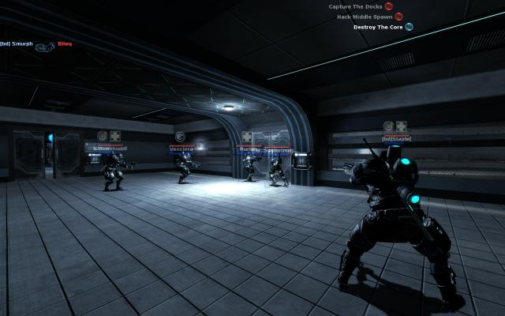

Game review by : Mr. Roboto
Year : 2007
Developer : Puny Human
Degree of Cyberpunk visuals : Very High
Correlation to Cyberpunk themes : Very High
Rating : 7/10

Overview: Seems every time I do a game review, someone has to mention Dystopia. Well, I've heard your voices and checked it out. I can definitely say that Dystopia indeed needs to be reviewed.
I've been sort of reluctant to do a review because, unlike G String, Dystopia is strictly a multiplayer mod and lately there haven't been many servers in operation to play. But maybe once this review is seen by able fans, there may be more servers going online.
The Story: Dateline 2069, after a series of wars, recessions, mergers, etc, governments have practically vanished as corporations now run everything. Anti-corporate resistance exists as mercenary "punks" have taken up arms against the private security "corp" forces seeking to bring law and order to the chaos of the arcologies.

Teamwork is important in Dystopia. Like having a heavy guard a decker who's jacked in and vulnerable.
There's no "I" in "team".
To survive in Dystopia, you need to rely not only on your own skills in FPSs, but in your teammates whether they be corp agents or punk mercenaries. First of all, once you log into a server and select a map, you have to decide if you want to be corp or punk. Then you need to decide which of the three classes you want to be. The light class has little armor and has to rely on speed and stealth to survive. Fortunately, they also have four implant slots to augment their stealthiness. Heavy classes don't have implant options, but their firepower options really don't require augmentation. Medium class is a balance of the others, with two implant slots available.
Now you can select from the weapons and implants available to your selected class.

Make certain one of your light/medium members has a cyberspace deck installed. You'll need a deck to access cyberspace.
From there, all you need to do is complete the objectives shown within the time limit to win.
Lone wolves need not apply. Dystopia is very much a multiplayer mod. Single players will be out of luck in playing, unless they can set up a server where only one player can log in... or develop bots that can act as allies/enemies. There is a tutorial that shows the basics, but you'll only be able to experience it as a corp "light shotgun decker" (light class with a shotgun and deck, working for the corps).
Not too long ago, there used to be a couple of dozen servers available to play on. You might even find a few without anyone logged in so you can explore the maps and practice against the automated defenses by your lonesome, until someone logs in as an opposing player. Recently, there have only been one server (if any) with only one map at a time available. That might be due to my timing, as I do work a forty-hour work week.

Besides, death is an experience best shared.
Conclusion: it's hard for a long-time solo player to get into a game like Dystopia, especially one who's deathmatch experience comes from Quake Reaper-bots. For fans of cyberpunk, the atmosphere and background just might be what brings those soloists into the multiplayer venue (unless they're trapped in Neocron for some odd reason). Though a single-player campaign or career would be nice.
In the mean time, how about setting up some servers so we can get into the Dystopian groove, K?